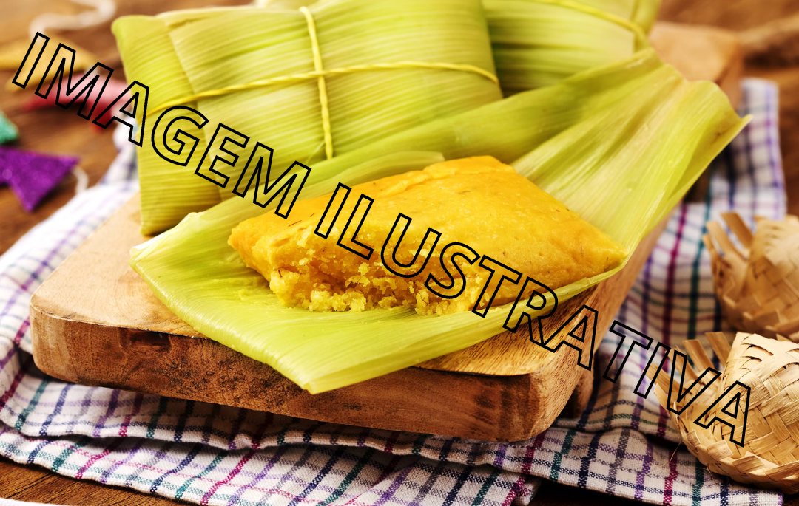
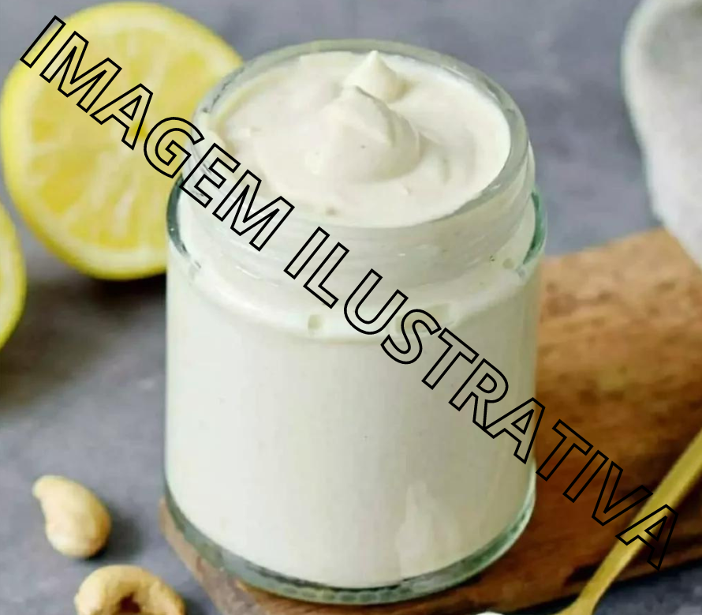

Doce de Leite Caseiro

Ingredientes:
- 1 litro de leite
- 500g de açúcar
- 1 colher de chá de bicarbonato de sódio
Modo de preparo:
- Em uma panela grande, misture o leite, o açúcar e o bicarbonato de sódio.
- Leve ao fogo médio, mexendo sempre, até engrossar e adquirir uma cor dourada.
- Despeje em um recipiente e deixe esfriar antes de servir.
Doce de Abóbora Caseiro

Ingredientes:
- 1 kg de abóbora cozida sem casca e cortada em pedaços médios
- 1 canela em pau
- Coco ralado fresco ou seco a gosto
- 2 xícara de chá de açúcar
- 3 cravos da índia
Modo de preparo:
- Em uma panela grande colocar a abóbora, o açúcar, a canela e os cravos.
- Levar para cozinhar em fogo brando com a panela tampada.
- Mexa sempre e amasse com uma colher de pau para desmanchar a abóbora. Quando ela estiver bem cozida, retire a canela e os cravos, e junte o coco.
- Deixe apurar mais um pouco e desligue o fogo.
- O doce não pode ficar seco, tem que ficar bem úmido.
Pamonha Caseira
Ingredientes:
- 5 espigas de milho com palha
- ¼ de xícara (chá) de coco fresco ralado
- 1 xícara (chá) de açúcar
- 2 xícara de chá de açúcar
- 1 pitada de sal
Modo de preparo:
- Retire as palhas das espigas, com cuidado para que não rasguem.
- Leve uma panela grande com bastante água ao fogo alto e deixe ferver. Mergulhe as palhas por 1 minuto e transfira para uma tigela. Dispense a água, encha a panela com uma nova água e volte ao fogo para ferver.
- Enquanto a água ferve, prepare as pamonhas: com um ralador médio, dentro de uma tigela grande, rale as espigas de milho. Depois de raladas, raspe cada sabugo com a parte de trás de uma faca.
- Sobre uma tigela, peneire o milho ralado, espremendo bem o bagaço com a parte de trás de uma colher até tirar todo o líquido. Descarte o bagaço. Junte ao líquido o coco ralado, o açúcar, o sal e misture bem. Vai adquirir consistência de creme.
- Para fazer a embalagem da pamonha, deite na bancada duas palhas, uma de frente para outra, com as laterais encaixadas. Unidas, elas devem tomar a forma de um tubo. Use um barbante para amarrar a extremidade de baixo, bem firme. Com uma mão, segure essa parte, deixando a extremidade solta virada para cima. Use um funil para verter o creme. Feche a pamonha e amarre o topo com um barbante, deixando cerca de 3 cm de espaço entre o recheio e o enlace, para não vazar. Transfira para um prato e repita o processo até acabar todo o creme.
- Transfira as pamonhas para a panela com água fervente e deixe cozinhar por 30 minutos. Retire com uma escumadeira, e deixe esfriar antes de abrir.
Requeijão Cremoso Caseiro
Ingredientes:
- 1L de leite integral
- 4 colheres (de sopa) de vinagre
- 2 colheres (de sopa) bem cheias de manteiga com sal em temperatura ambiente
Modo de preparo:
- Ferva o leite, desligue a panela, adicione o vinagre e misture, espere a mistura talhar, aprx. 10 minutos.
- Jogue essa mistura em uma peneira bem fina ou coe com um pano, o soro vai ser retirado e só vai sobrar o queijo na peneira.
- Coloque esse queijo no liquidificador com a manteiga e bata muito bem, se necessário coloque mais leite até ficar bem cremoso.
- Coloque em um recipiente e deixe na geladeira por 30 minutos.